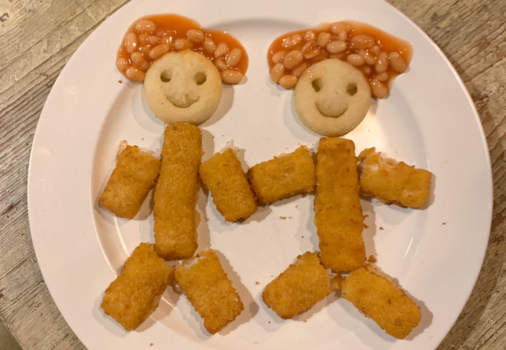

Fish Finger Baked Beans Special!

The kids loooove this one
Simple, quick and delightful
Ingredients
- Fish fingers
- Biscuits
- Baked beans
- Condiment or topping of choice(optional)
Instructions
- Wrap a baking tray in cooking foil and spray with non stick spray
- Butter could be used to cover the surface instead in step 1
- Bake in oven for 15-20 minutes until golden brown
- Remove and cool down for at least 7 minutes
- Place fingers, biscuits and baked beans onto a plate, don't be afraid to get creative
- Enjoy your fun and tasty meal